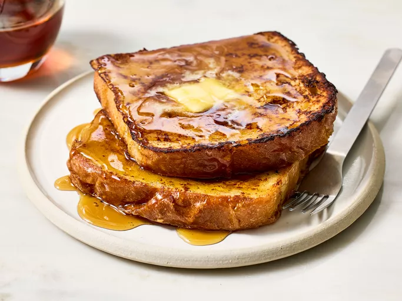

French Toast

Description
A simple yet delicious breakfast treat.
Ingredients
- ⅔ cup milk
- 2 large eggs
- (OPTIONAL) 1 teaspoon vanilla extract
- (OPTIONAL) ¼ teaspoon ground cinnamon
- salt to taste
- 6 thick slices bread (ideally day-old or stale slices as they absorb the eggy mixture better)
- 1 tablespoon unsalted butter, or more as needed
- Adequate amounts of maple syrup to serve with
NOTE: Yields six slices
Steps
- Gather ingredients
- Whisk milk, eggs, vanilla, cinnamon, and salt together in a shallow bowl
- Lightly butter a griddle or skillet and heat over medium-high heat. Dunk bread in the egg mixture, soaking both sides
- Transfer to the hot skillet and cook until golden, 3 to 4 minutes per side
- Serve hot with maple syrup
Home